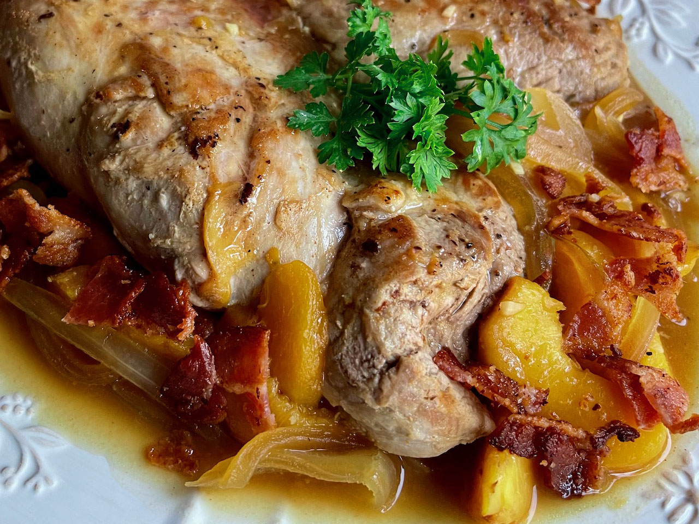

Pork Tenderloin with Peaches

description
When pork comes together with peaches, onions, and a little orange juice, it's a party of flavors.
Sub soy sauce for the fish sauce, if you like. We like this with rice and a green vegetable.
ingredients
- 3 slices bacon
- 1 (2pound) package pork Tenderloin
- 1/2 teaspoon salt
- 1/4 teaspoon freshly ground black pepper
- 3/4 teaspoon ground ginger, divided
- 1/2 cups vertically sliced onion
- 1/2 teaspoons minced garlic
- 2 cups peeled and sliced fresh peaches
- 1 cup low-sodium chicken broth
- 2 tablespoons frozen orange juice concentrate
- 1 teaspoon fish sauce
- 2 tablespoons water
- 2 tablespoons cornstarch
- fresh parsley for garnish (optional)